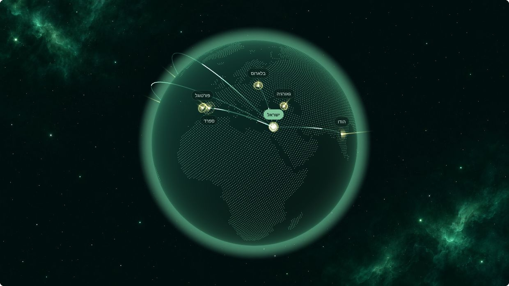

פרויקטים של בתי רשת בישראל ובחו״ל
בתי רשת בשלוש יבשות. בחו״ל אנחנו מתכננים את העבודה, מדריכים ומנהלים צוותים מקומיים ומפקחים על הביצוע.
הפרויקטים על הגלובוס
גררו כדי לסובב, התקרבו לישראל, ולחצו על נקודה כדי לראות את הפרויקט.

| מדינה | עבודה | שטח (דונם) |
|---|---|---|
| מקסיקו | בתי רשת | 150 |
| הודו | בתי רשת | 80 |
| הונדורס | בתי רשת | 70 |
| ספרד | בתי רשת | 60 |
| גאורגיה | בתי רשת | 50 |
| פורטוגל | בית רשת לאבוקדו | – |
| בלארוס | פרויקט מורכב: עמידה בלוח הזמנים, ייצור מקומי, שילוח וצוותים מקומיים | – |
| סך השטח המפורט (נתונים נכון ל-2015) | 410 | |
פרויקטים נבחרים
שמות לקוחות ונתונים מפורטים מתפרסמים רק באישור של כל לקוח. המלצות זמינות אחרי שיחה ראשונה.
- קיוויבית רשת עם הדליה בצורת סוכההגליל העליון
- בננותבית רשת לבננות עם רשת 11%הגליל המערבי
- תפוחיםבית רשת למטערמת הגולן
- דובדבניםבית רשת למטעישראל
- אבוקדובית רשת לאבוקדופורטוגל
מתכננים פרויקט של 50 דונם ומעלה?
שלחו מיקום, גידול ושטח. נחזור אליכם לתאם שיחה ראשונה, וכשהפרויקט מתאים, ביקור בשטח.